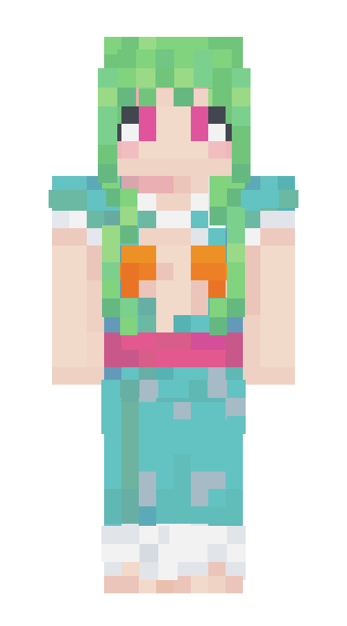
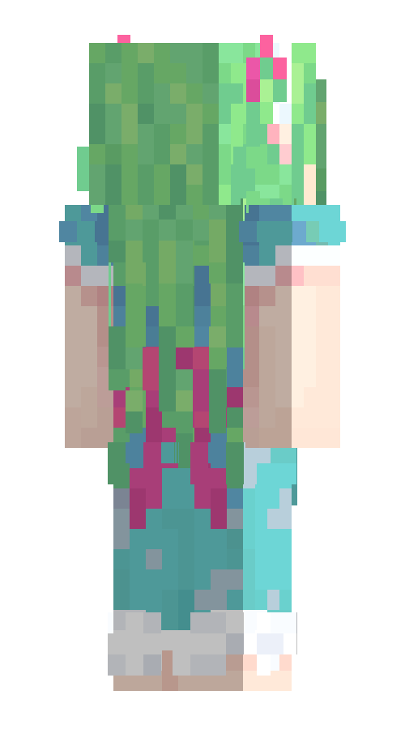

Принцесса Аквария
Принцесса Аквария, или Аделин Аквария Серафель Нереид'орион — юная девушка расы рыболюдей, принцесса Королевства Морская пена. Добрая и энергичная, хоть и немного избалованная.
Она проспала под водой рядом с островом сто лет, заточенная туда кем-то, и проснулась от, по её словам, «тяжёлого удара чего-то об землю»[может быть изменено]. Сразу после пробуждения она выплыла на поверхность и вышла на контакт с капитаном Юхавом, Наутилусом и Жёлтым кроликом.
Хочет вернуться в своё королевство, уверенная, что народ ждёт её, но была оставлена слишком далеко, чтоб понять дорогу домой. Воспринимая Тето и Жёлтого кролика, выходцев из морского народа, как своих прямых подчинённых, обязуется сначала помочь им в исполнении их личных целей. Заверилась покровительствовать их, пока они находятся на острове.
Внешность
Принцесса выглядит как стройная девушка среднего роста. У неё светлая кожа и длинные светло-зелёные волосы, на концах разделяющиеся на отдельные пряди и немного вьющиеся, подражая виду морских водорослей. У неё слегка неровная чёлка средней длины. Сверху волосы украшены белым ободком, а по бокам собраны в два маленьких хвостика с помощью розовых лент, оформленных в бантики. У неё ярко-розовый цвет глаз.
Она одета в длинное голубое платье, уходящее в пол, с короткими рукавами-фонариками. Подол платья и рукава оформлены белой оборкой, напоминающей морскую пену. Белый воротник платья закреплён одной пуговицей в виде палочек, как на пальто вида «дафлкот», и формой напоминает стандартный воротник рубашки, только плотнее. От воротника до талии платье расходится в глубокий вырез, полностью открывающий грудь и часть рёбер. Вырез имеет линзовидную форму, сужающийся у воротника и в талии. Грудь прикрыта оранжевыми ракушками. В талии платье оформлено толстым розовым поясом, сзади завязанным в большой бант. Принцесса ходит без обуви даже на суше, объясняя это личным удобством, и не привыкла к её носке.
Принцесса выглядит на удивление человечно для морского жителя, что ни раз замечалось остальными на острове. Она выглядит как обычная девочка подросткового возраста, только с необычной формы ушей, немного удлинёнными и заострёнными на конце. Под грудью у неё есть небольшие жабры в виде щелей. Они немного прикрыты одеждой а также напоминают силуэт выступающих из-за её худобы рёбер, так что всё ещё не были никем замечены на острове. Так, вырез на платье также помогает ей дополнительно охлаждаться. Несмотря на его открытость и экстравагантность, оно было описано принцессой как «скромное» и «невзрачное», что указывает на большую разницу в представлениях о повседневной одежде людей и рыболюдей.
Личность
Принцесса жизнерадостностна и активна, всегда переполненная идеями и грандиозными планами. Она отличается детской непосредственностью и некоторой наивностью, но может (насколько ей это возможно) немного хитрить, если настроена на получение выгоды. При дворце принцесса Аквария обучалась государственному праву, живописи, каллиграфии, светскому этикету, языкам: она свободно говорит на языке морских кроликов. Увлекается письмом и поэзией, после выхода на сушу открыла для себя музыку, которой под водой не было ни в каком виде. Приходит в настоящий восторг от музыкальности мира. Она ещё не выработала собственный вкус, и ей нравятся любые композиции, созданные людьми. Искренне наслаждается пластинками, что могут напугать других. Принцесса обладает хорошими манерами и вежлива, хоть и может иногда выражаться слишком прямо, особенно по отношению к капитану Юхаву (например, при первой встрече сказала ему в лицо, что от того плохо пахнет), но не имеет под этим ничего плохого.
Обладая достаточными лидерскими навыками, заняла место негласного правителя Острова. Может показаться избалованной и ленивой, когда речь заходит о физическом труде, но старается исправиться и быть более самостоятельной, чтоб не подводить остальных. Она сразу гарантирует своё покровительство Тето и Жёлтому кролику, так как в первую очередь желает защитить и помогать таким же жителям Морского мира, как она. Искренне сочувствует судьбе каждого, кто по неудачному стечению обстоятельств был прибит к Острову, и видит каждого его жителя как своего подданного, которого должна опекать.
Иногда она не совсем понимает телесных границ других людей: при знакомстве с Тето она хотела потрогать его хвост, просила Наутилуса позволить примерить его костюм. Также давала комментарии об одежде Жёлтого кролика, называя её модной, а Юхаву сказала, что его наряд был бы красивее, если бы он расстегнул рубашку, открыл грудь, и, возможно, сменил оправу очков.
Отношения
Капитан Юхав
См. также: Капитан Юхав#Принцесса Аквария
По-началу настроенные друг к другу с осторожностью, Принцесса и Капитан на удивление быстро сдружились и теперь часто действуют вместе. Капитан, также имеющий опыт руководства, стал правой рукой Принцессы.
Первый деньКапитан Юхав был одним из первых, кого Принцесса встретила выйдя на остров, пока он разговаривал с Наутилусом и Жёлтым кроликом. Они поделились тем, как попали сюда, и Принцесса попросила у Капитана помощи в её дальнейшем возвращении домой. Он показался ей достаточно заслуживающим доверия, чтоб пока положиться на него.
Решив основаться на острове, втроём с Наутилусом они начали постройку дома под руководством Юхава. Принцессу не впечатлил его вкус, и она отлучилась от постройки. По возвращении он пристыдил её за отлынивание от работы, и в качестве извинения она вручила ему брёвна, что сама срубила.
Принцесса предлагала Капитану разделить с ней комнату, так как ей страшно спать одной, но тот ответил, что это странно. Они вдвоём отправились в шахты и даже посетили Тёмные глубины, но, неподготовленные, ушли оттуда ни с чем. Принцессу не растроил такой итог, потому что ей было весело.
Второй деньПринцесса стала свидетелем обмена большим количеством ресурсов между Капитаном и Жёлтым кроликом. Капитан попытался обмануть её, обвинив Жёлтого кролика в том, что он отобрал у Капитана золото и не отдал ничего в ответ, но Принцесса сразу распознала ложь и аккуратно надавила на Капитана, чтоб тот поделился частью с ней. Они разделили достаточно большую на тот момент добычу, оставив этот секрет между друг другом. Такая попытка обмана от капитана Юхава заставила Принцессу Акварию относиться к нему с большей осторожностью, но она всё ещё была настроена держать его близко к себе, рассчитывая на то, что он может принести больше выгодных сделок.
Затем, настроенные против общего врага, Жёлтого кролика, который после сделки строил им козни, они на удивление приятно провели время, гоняя его вокруг и вместе проклиная. Принцессу и капитана Юхава достаточно сплотило желание руководить этим островом, держа под контролем его обитателей.
Третий деньПринцессу оскорбило предположение Капитана о том, что её королевства уже может и не быть. Она обвинила его в том, что он может и не является настоящим капитаном и никогда не плавал в море. После ссоры они извинились перед друг другом и сошлись на том, что Капитан просто плавал в других морях. Вместе они придумали флаг для Острова и возвели его большую копию у дома.
Четвёртый деньОставленные дома одни, вместе подверглись нападкам со стороны Ифритки и Красного кролика.
Пятый деньВдвоём отправились в экспедицию в поисках джунглей. Вместе нашли достаточно много всего. Их совместное времяпрепровождение потеряло напряжение и обрело беспечный, дружественный характер.
Седьмой деньЖёлтый кролик дал им по очереди прочесть свою книгу. Она понравилась Принцессе, но показалась Капитану слишком неприличной, до той степени, что он забрал книгу и попытался её уничтожить. Принцессе такой жест показался грубым. Потом они провели время вместе с Белым кроликом.
Восьмой деньВместе начали возводить галерею по задумке Принцессы. Она благодарна за такую помощь.
Девятый деньКапитан был резко груб с Принцессой. Она не поняла причину такого отношения и была сильно расстроена.
Двенадцатый деньПринцесса стала свидетелем того, как капитан Юхав представлял себя перед Гошей как главного на Острове, а её — как его прислужницу. Ей захотелось проучить зазнавшегося Капитана и она начала вежливо намекать на настоящие подробности их взаимоотношений, принижающие Юхава в глазах нового знакомого: как он делает всё что она попросит и всегда старается ей угодить.
Тето
См. также: Тето#Принцесса Аквария
Тето — справедливый и честный рыцарь в глазах Акварии. Он немногословный и немного закрытый, но исполнительный и преданный. При встрече он отказался от физического контакта, чем смутил Принцессу, но она быстро привыкла к его большой потребности в личном пространстве, и даже уважает Тето за то, как он придумал соорудить в доме этаж, на который никто не может попасть кроме него.
Она не знает деталей проблемы, с которой столкнулся Тето, также ищущий своё королевство, но очень хочет ему помочь. Принцесса считает, что не смеет покидать Остров, пока Тето не достигнет своей цели. Принцесса упросила Юхава позволить Шино жить с ними в доме только потому, что та является единственной подсказкой к разгадке о королевстве, где жил Тето. Она поняла, как ему это важно, хоть и сама не хотела иметь дел с Шино.
Жёлтый кролик
См. также: Жёлтый кролик#Принцесса Аквария
Принцесса сразу прониклась симпатией к Жёлтому кролику, так как он является таким же морским жителем, как она и аксолотль Тето. Но он быстро показал себя перед ней с плохой стороны, всячески пакостя ей и Капитану: уже на второй день он успел шантажировать Юхава во время сделки прямо на глазах у Принцессы, замуровать дверь в их дом, прокапываться под ним и пытаться подслушивать. Принцесса восприняла такой ответ на её доброту как настоящее предательство и видела Кролика как опасного врага.
Детали следующей сделки между Кроликом и Капитаном приятно удивили Принцессу: она услышала, что Кролик просит научить его грамоте. Растроганная таким желанием, она с радостью взялась за обучение Кролика вместе с Капитаном и Наутилусом. Кролик всё ещё доставал её и казался надоедливым, но она начала видеть его скорее как непутёвого младшего, которого следует наставлять. Например, Жёлтый кролик сильно рассердил её, когда измазал их дом в наросте и построил много шестов из булыжника вокруг него, и Принцесса заставила его убирать за собой.
Кролик также приятно удивил её, показав книгу собственного написания. Она показалась Принцессе довольно чувственной и смелой. Она отметила, что всегда рада узнать, что на душе у её подданных. Особенно прекрасным ей кажется, когда они выражают себя через творчество, каким оно ни было. Капитану Юхаву книга показалась чрезвычайно неприличной и неподходящей для детских глаз.
Сейчас отношение Принцессы к Жёлтому кролику скорее тёплые, как бы он ни раздражал её время от времени. В своём
интервью, которое проводил Жёлтый кролик, на вопрос «Вы меня любите?» она не задумываясь ответила громким «Да!».
Наутилус
См. также: Наутилус#Принцесса Аквария
Заметки
- После такого долгого сна под водой, Принцессе не очень нравится оставаться в одиночестве. Ей немного страшно спать одной.
- У Принцессы, как у рыбочеловека, немного ступленное обоняние, так как под водой оно меньше используется. Возможно, поэтому ей комфортно проводить с Юхавом много времени, в отличие от остальных, что им несколько брезгуют.
Будущие события
Факты, описанные ниже, ещё не были разыграны и являются спойлерами. Даже сама Принцесса не знает ни о чём из перечисленного.
- На самом деле весь народ рыболюдей был превращён в морских стражей. Подводные крепости, встречаемые по миру — единственное, что осталось от их былой культуры.
- Узнав правду о судьбе народа, Принцесса предположит, что её спрятал глубоко под водой её же народ, заботившийся об её безопасности.
- Принцесса — гибрид человека и рыбочеловека. Её мать была в браке с королём, который был достаточно старше. На суше у неё был роман с молодым человеческим мужчиной, и она от него забеременела. Рождение Акварии было праздником в королевской семье: король годами пытался завести наследника с разными женщинами и был рад, что ему наконец удалось это сделать с молодой женщиной. Совсем скоро в Акварии узнали гибрида, во дворце был скандал, но королём было принято оставить её и растить как своего ребёнка, так как он искренне любил её мать. Королевского ребёнка не показывали на людях, прикрывали тканями места, в которых могли быть заметны различия от обычного рыбочеловека. У Акварии не было друзей её возраста, но скучать не было времени, пока она обучалась при дворце многим наукам.
Ближе к её совершеннолетию во дворце был поднят вопрос о наследнике. Советникам короля была недопустима даже мысль о том, что гибрид может занять трон. Придворными было принято решение незаметно избавиться от Акварии, и, по возможности, её матери, расценив её поход налево как предательство всего государства. Узнав об этом, король велел супруге бежать с дочерью дальше от дома. Аквария была магией усыплена и помещена в силовой барьер вместе с трезубцем, когда-то подаренным ей родителями.- После этого между королевством Морская пена и королевством Аксолотлей началась война. Королева аксолотлей попросила Шино, их божество, обрушить на врага страшное проклятие. Так все рыболюди в мире были превращены в одноглазых чудовищ, что сейчас известны как морские стражи. Принцессу, помещённую в магическое поле, не коснулось проклятие. Её мать оставила дочь в пузыре и могла бежать дальше или вернуться обратно, но точно была также превращена в стража. У королевской семьи так никогда и не было других детей.
Галерея